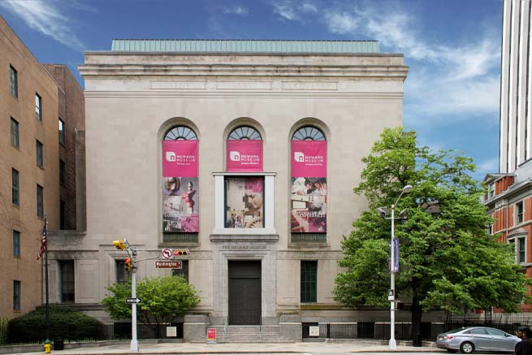
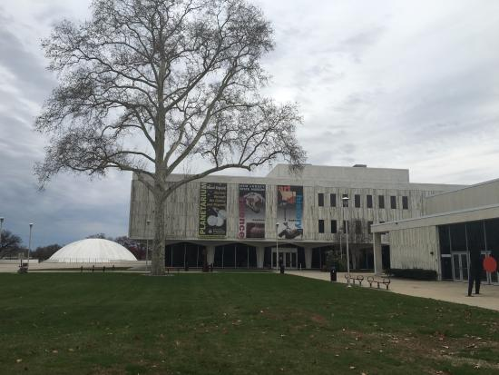

Museums
Home
Museums Info
Newark Museum of Art

The Newark Museum of Art (formerly known as the Newark Museum), in Newark, Essex County, New Jersey, United States, is the state's largest museum. It holds major collections of American art, decorative arts, contemporary art, and arts of Asia, Africa, the Americas, and the ancient world. One of the museum's most famous atractions are the Tibetian galleries which are considered to be the best in the world. The museum was founded in 1909 by librarian and reformer John Cotton Dana thus making it more than 100 years old. As the charter described it, the purpose was "to establish in the City of Newark, New Jersey, a museum for the reception and exhibition of articles of art, science, history and technology, and for the encouragement of the study of the arts and sciences." If you are a fan of art in genral you will defenitely enjoy this museum due to its extensive art collection from different periods and from around the world.
Liberty Science Center
Liberty Science Center is an interactive science museum and learning center located in Liberty State Park in Jersey City in Hudson County, New Jersey. The center, which first opened in 1993 serves as New Jersey's first major state science museum. It has science exhibits, the largest and most technologically advanced planetarium in the Western Hemisphere, numerous educational resources, and the original Hoberman sphere. Some of the most famous and exciting atractions are the Skyscraper! Achievement and Impact, which is the largest exhibition on thesubject of skyscrapers in the world – with artifacts from the World Trade Center, a walk along an I-beam two stories above the exhibition floor, an earthquake-shake table, and a glass-Schindler 400A mid-rise traction elevator, which is open to show how the elevator moves, the machine room, and the pit, the Eat and Be Eaten, which is an exhibit of unusual live animals explores the predator-prey relationship, including vipers, puffer fish, cotton-top tamarins, brilliantly colored poison dart frogs, eusocial naked mole-rats and fungus culturing, leaf cutter ants, and Communication, which explores human communication in four areas—body and language; symbols, signs, and writing; print, audio, and video; and signals and networks. Here guests can also do Language Karaoke, where they are taught to say phrases in Mandarin Chinese, Arabic, Spanish, and Cockney. needless to say this museum is perfect for those interested in science.
Morris Museum
The Morris Museum has been actively running since 1913. It is the second largest museum in New Jersey at 75,524 square feet. The museum is fully accredited by the American Alliance of Museums. It was founded in 1913 as a collection of curio cabinets held in the Neighborhood House School in Morristown. The museum continued to expand until 1957 when the Twin Oaks Mansion was purchased, making it the current site of the museum. The Morris Museum has several permanent exhibits, with collections focusing on local wildlife, musical boxes, automata and history. These include a fossil exhibit, a natural science exhibit, minerals, textiles, a Native American collection, and a model train room. There is also the Dodge Room dedicated to Geraldine Rockefeller Dodge, a philanthropist and Morristown resident. The room features several paintings and sculptures relating to Dodge's philanthropy, especially surrounding her work with animals. Throughout the year, temporary and traveling exhibits can also be viewed, including several art galleries featuring local and enrolled student artists. In 2003 the museum was awarded the Murtogh D. Guinness Collection. The exibit opened in 2007 and contains 750 pieces of mechanical musical instruments and automata. In 2017 the museum announced its four-year exhibition series, "A Cache of Kinetic Art", focusing on kinetic and moving art. The exhibits feature art from new and established artists from around the world. The series opened in spring of 2018. The Morris Museum is perfect for anyone due to its large and diverse exhibits and collections, from the local wildlife, histroyand traditions, natural science, and art.
New Jersey State Museum

The New Jersey State Museum was the first state museum in the country established with education as a primary focus of its mission. The New Jersey Legislature formally established the museum by law in 1895, and the museum was housed in the New Jersey State House. The museum's collections include natural history specimens, archaeological and ethnographic artifacts, and cultural history and fine art objects, and exhibitions, educational programs and research provide context for the collections. The museum, which is a division of the New Jersey Department of State, includes a 140-seat planetarium and a 384-seat auditorium. The collection includes 2+ million specimens.The Bureau of Archaeology/Ethnography collections encompass approximately 2.4 million prehistoric and historic specimens acquired by nearly 100 years of excavation, as well as almost 4,000 ethnographic objects acquired as gifts to the museum. Scholars widely recognize the museum's archaeology specimens as the definitive systematic research collection for the study of the prehistory of New Jersey. Notably, the archaeological collection includes material excavated from the nearby Abbott Farm National Historic Landmark Site. The museum's archaeology collections are respected as one of the most important collections for the regional study of northeastern North America, and provide data on the entire span of human occupation in New Jersey from prehistoric times to the 20th century. The Bureau of Cultural History preserves and interprets historical objects that document the lives of people who have lived in New Jersey from the 17th century to the present. The collection includes over 13,000 artifacts documenting New Jersey's cultural, economic, military, political, and social history, as well as aspects of its decorative arts. Ranging from ceramics produced by Trenton potteries to decorative quilts made and used by New Jersey women to utilitarian artifacts reflecting the rich maritime and agricultural heritage of the Garden State, the Cultural History Collection is one of the largest material culture collections dealing with New Jersey history. The State Museum has collected over 12,000 works of art including paintings, prints, drawings, sculpture and photographs, most acquired since 1965 when the museum's mission was expanded to include fine art. The collection has an American focus that highlights the work of New Jersey artists within the context of American art history. Also included are works that depict New Jersey scenes and events. The Bureau of Natural History holds a diverse collection of about 250,000 specimens which have historic and cultural significance, in addition to their scientific value. The natural history collections are especially strong in industrial minerals and ores, paleontology specimens (fossils), osteology specimens (bones), modern shells, and a systematic study skin component. Smaller sub-collections include pinned insects, fluid-preserved fauna, taxidermy mounts and glass lantern slides. The museum's Bureau of Education offers programs and events designed to offer activities that not only engage our audiences but help to instill a desire for lifelong object-based learning. School groups can attend museum-based classes, hands-on workshops, exhibition tours, planetarium programs, as well as access classroom resources such as curriculum guides. The museum's planetarium is equipped with “Full Dome” video technology, and also includes a digital video hemisphere as part of the planetarium lobby exhibitions. The 140-seat planetarium also features a Minolta MS-10 instrument for sky shows and visual displays of the solar system. Thismuseum is absolutely huge and and represents New Jersey's many diferent aspects such as the history, culture, traditions and arts. If you want to know more about the state of New Jersey this is the place to go.
Battleship New Jersey Museum and Memorial
The Battleship New Jersey Museum and Memorial preserves and displays USS New Jersey, the most decorated battleship to have served in the U.S. Navy and one of the largest ever built. In February 1991, USS New Jersey was officially retired and sent to Bremerton, Washington. It was going to be a backup ship in case it was needed. After 7 years the ship was approved to be swapped with the USS Iowa. The ship was subsequently sent to Camden, New Jersey to serve as a memorial and a museum in 2001. Included in the exhibits are all the ship's weapon systems such as the famous Mark 7 Gun used for shore bombardment and also the crew's quarters, radio control room, radar room, and senior staff cabin. This ship is the pride of New Jersey and not only does it represent the history of the state but also that of the entire country and the secon World War. If military histroy is you're thing you should definitely check out this amazing battleship.
Sterling Hill Mine
The Sterling Hill Mine, now known as the Sterling Hill Mine Tour & Museum of Fluorescence, is a former iron and zinc mine in Ogdensburg, Sussex County, New Jersey. It was the last working underground mine in New Jersey when it closed in 1986 and it became a museum in 1989. The mine along side the Franklin Mine is known for its variety of minerals, especially the fluorescent varieties. Due to it's historic importance the mine was added to the National Register of Historic Places in 1991. The mine is very old as mining began at the site in the 1630s, when it was mistakenly thought to be a copper deposit. The mine remained active until 1986 when it closed due to a tax dispute with the town. The mine was important because In the area of the Franklin and Sterling Hill mines, 357 types of minerals are known to occur; these make up approximately 10% of the minerals known to science. Thirty-five of these minerals have not been found anywhere else. Ninety-one of the minerals fluoresce. The tour spends about 30 minutes inside the Exhibit hall which contains a wide variety of mining memorabilia, mineralogical samples, fossils, and meteorites. It then leads into the mine for a 1,300 feet walk on level ground through the underground mine. The walk goes through a new 240 feet section called the Rainbow tunnel which they blasted in 1990 using 49 blasts and at a cost of $2 a foot. In the Rainbow room, short wave UV lights are turned on to demonstrate the entire tunnel and various samples glowing with fluorescence. This mine shows how important the land in New Jersey is and if you are interested in the industrial history of the state this mine wont disappoint.